Process Book
Draft for the Milestone 3 checkpoint. Sections 1–5 summarize what we wrote and found in Milestones 1 and 2. Yellow boxes like this one mark what the team still needs to add before the final delivery (Dec 10).
1. Overview and motivation
We picked Use Case 1: Explore Cell Behavior, using only the ground-truth tracks (Dataset 1). We chose it because we wanted the project to be about what the cells are doing rather than about scoring tracking models, and because its tasks (summaries, comparisons, outliers, and catching bad data) push toward different chart types instead of the same chart repeated.
Questions the dashboard should answer
- How long do cells last, how far and how fast do they move, and how often do they divide? Does that change by cell line?
- Do sequences (fields) of the same cell line behave alike, and how different are the cell lines from each other?
- Which cells are unusual: very fast, very short-lived, or ending in the middle of the image?
- Which sequences show experimental problems: empty early frames, cultures that barely grow, or moments where the microscope stage moved and dragged every cell with it?
2. Data and processing
We used all 25 ground-truth sequences with no sampling: 229,890 cell observations (one row per cell per frame, one frame every 15 minutes).
| Cell line | Sequences | Frames per video | Rows | Cell segments | Lineages | Divisions |
|---|---|---|---|---|---|---|
| MCF10A | 9 | 385 (96.25 h) | 67,586 | 2,109 | 901 | 601 |
| HEK293T | 6 | 230 (57.5 h) | 85,345 | 2,133 | 1,008 | 561 |
| MDA-MB-231 | 6 | 385 (96.25 h) | 51,987 | 933 | 729 | 102 |
| U87 | 4 | 289 (72.25 h) | 24,972 | 752 | 592 | 71 |
Most questions are about whole cells or whole videos, so we aggregate in Python (pandas) and load the results in D3 as JSON. We work at three levels:
- Per sequence × frame: cell count, mean step vector, and a coherence score (|mean step vector| ÷ mean step length). Near 1 means every cell moved the same way.
- Per cell segment: one cell from birth or entry to division or exit. We use segments instead of Track_ID for movement because one Track_ID covers a whole family (up to 76 cells).
- Per lineage (Track_ID): span, divisions, and branches.
Cleaning decisions
- Cell IDs are not unique across files (45,964 repeat), so every join is keyed by (sequence, Cell_ID). Missing this first produced 22,882 segments with straightness above 1.
- Stage-shift correction. A frame step is flagged when coherence > 0.9, the shared shift is > 40 px, and at least 10 cells are present. That gave 82 flagged steps in 20 of 25 sequences. The shared shift is subtracted from every later position. Raw positions are kept, so the map can switch between raw and corrected.
- Endings. The data has no apoptosis column, so each segment gets one of four endings: divided, until video end, left image (last position within 25 px of the border), or lost mid-image.
- The speed view leaves out segments shorter than 2 h (8 frames), and the growth view uses a 1-hour rolling median.
3. Milestone 1: sketches and alternatives
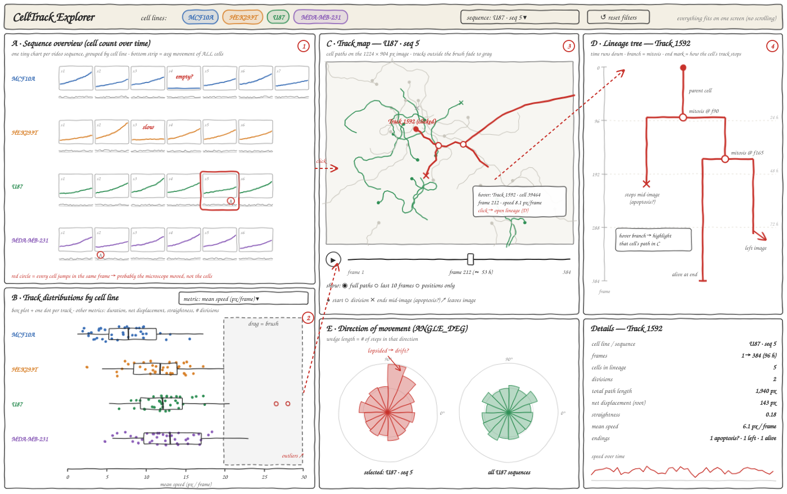
Before settling on this layout, we sketched and dropped several alternatives:
| Sketch | Why we dropped or kept it |
|---|---|
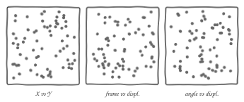 |
Three raw-column scatterplots dropped Tens of thousands of overlapping points, and none of them answer track-level questions. This is what made us compute summaries first. |
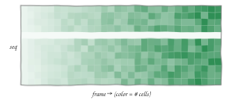 |
Sequence × frame heatmap backup Compact, but growth rate is a slope and is easier to read from position than from color. This idea came back in Milestone 2 as View B. |
| Parallel coordinates dropped A hairball with thousands of tracks, and harder to read for a biologist who hasn't seen one before. | |
| Pie charts of endings dropped Angle and area are weak channels. We noted that a stacked bar would be better, which became View F. | |
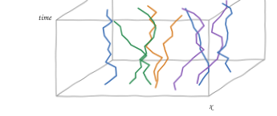 |
3D space-time cube dropped Occlusion, needs rotation, and depth is a poor channel. |
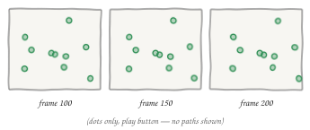 |
Animation-only map dropped Change blindness, and you can never see a whole path at once. |
4. Milestone 2: testing the design on real data
We drew every Milestone 1 view with all of the real data in matplotlib. Several of them broke, and the fixes shaped the current design.
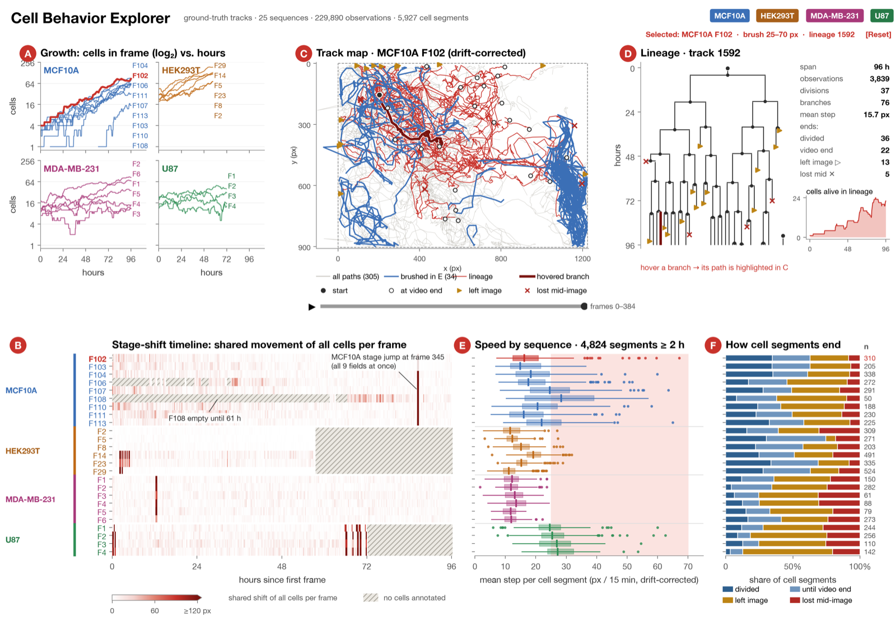
F1 · All 25 growth curves on one chart failed
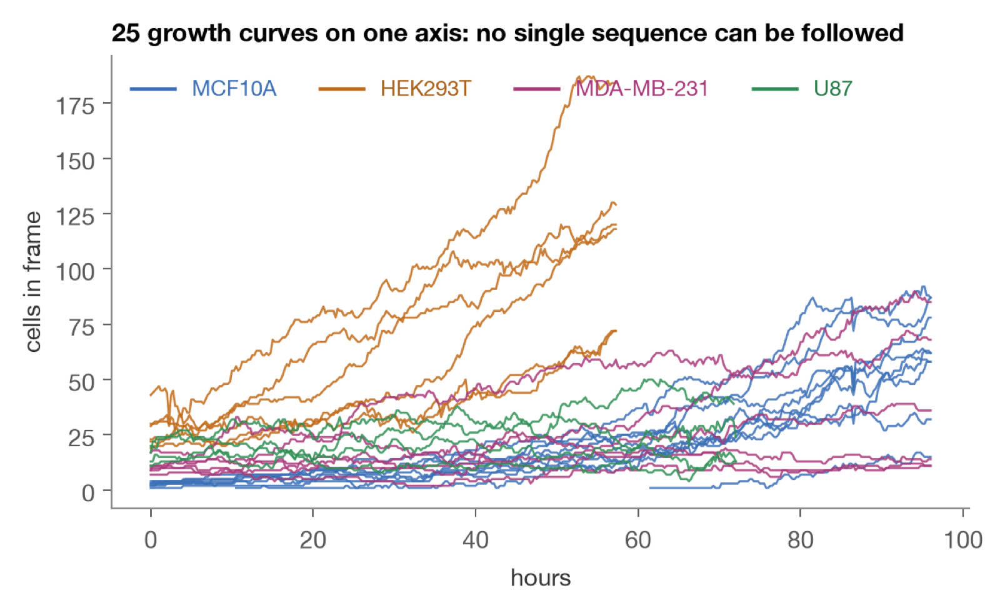
There were too many series on one linear axis, and the low-count lines piled up near zero. Revision: one panel per cell line on a log2 axis, so exponential growth is a straight line and its slope is the growth rate.
F2 · Small multiples on a linear axis with movement strips revised
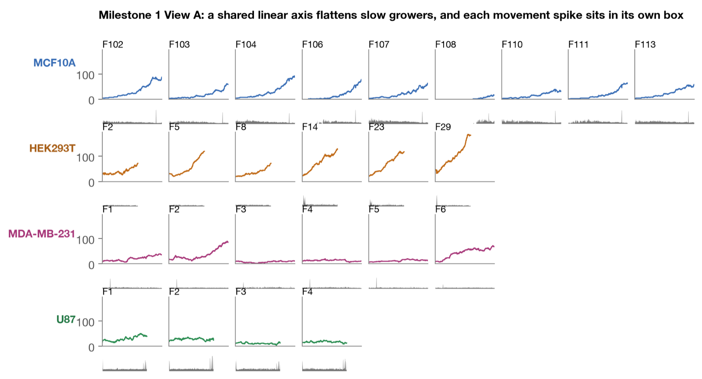
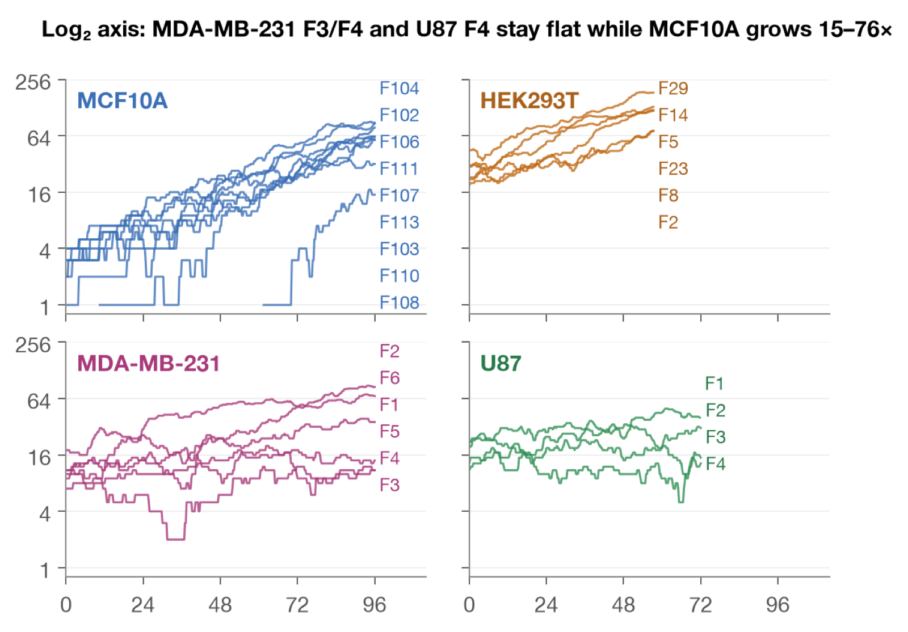
The shared linear axis flattened most curves. Spikes in the movement strips also sat in separate boxes, so we didn't notice they line up across fields. Revision: the strips became their own aligned heatmap (View B).
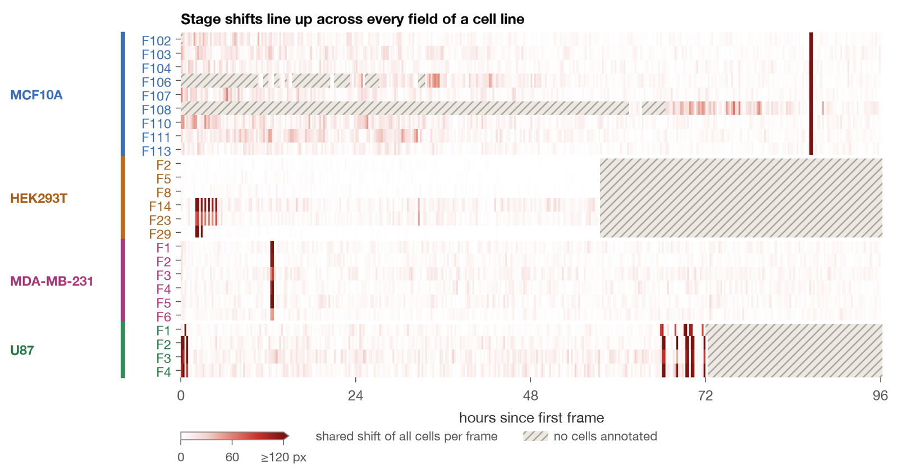
F3 · Raw track map failed
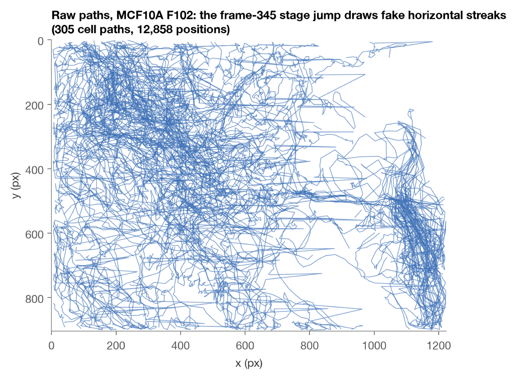
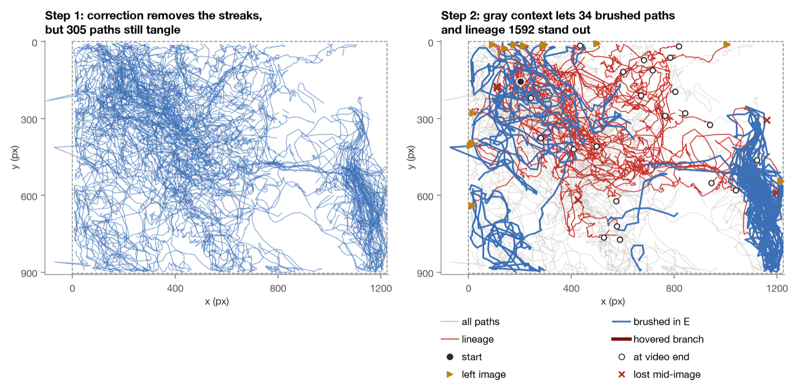
The long horizontal streaks were a stage jump at frame 345, not cell movement. Also, 305 paths drawn at the same weight made a hairball. Revision: remove the shared shift, draw all paths as thin gray context, and color only the brushed paths and the selected lineage.
F4 · Box + one dot per track, by cell line revised
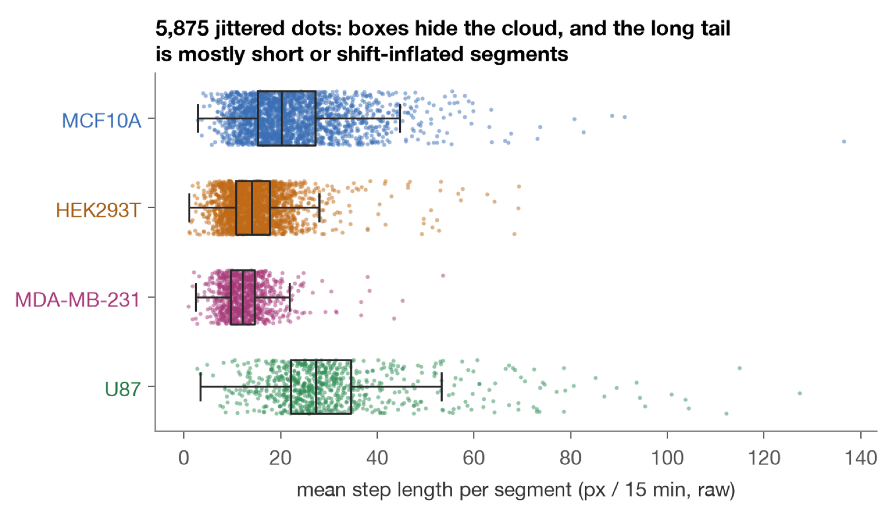
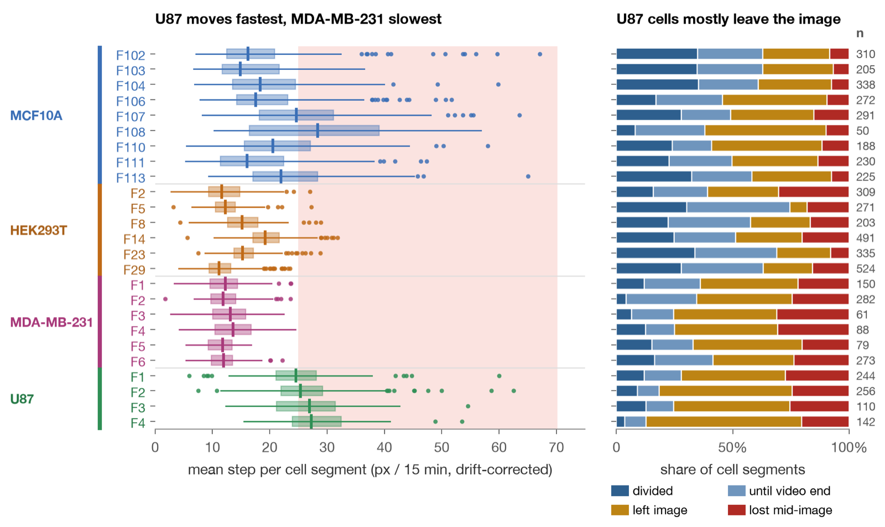
With 5,875 dots, the jitter band became a solid block. Revision: one row per sequence, compact boxes with dots only for outliers, drift-corrected speed, and a new endings view (F) on the same rows.
F5 · Direction rose dropped
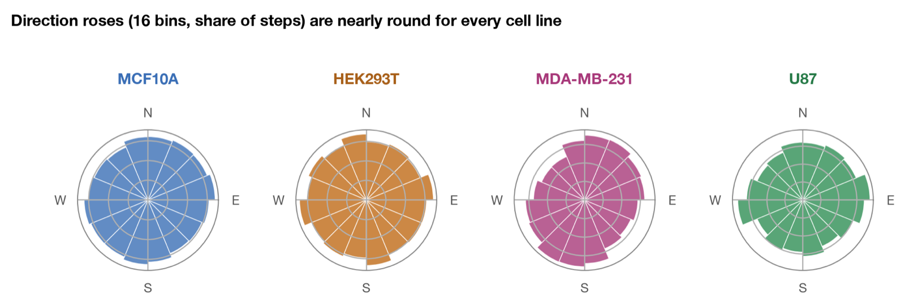
All four roses were nearly round. A stage shift lasts 2 of 385 frames, so pooling over time hides it. View B shows the same signal over time.
F6 · Labeled node-link tree revised
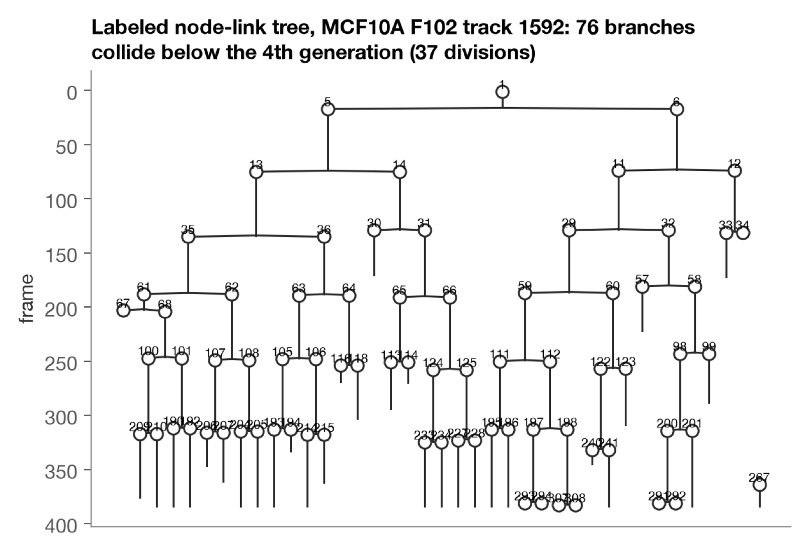
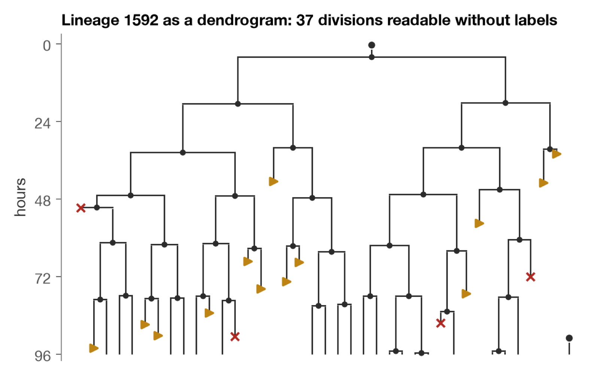
Lineage 1592 has 76 branches, so labels and node circles overlapped. Revision: an unlabeled elbow dendrogram with time in hours (IDs on hover).
5. Insights so far
- Stage shifts hit a whole cell line at once: all 9 MCF10A fields at frame 345, all 6 MDA-MB-231 fields at frame 49, and U87 repeatedly between 66 and 72 h. That is a plate-level microscope event, not cell behavior.
- Slow cultures: MDA-MB-231 F3 (1.1× over 96 h), F4 (1.0×) and U87 F4 (0.9×), compared with 15–76× for MCF10A. MCF10A F108 has no annotated cells until 61 h.
- U87 is the fastest line (median 25.7 px per 15 min) and MDA-MB-231 the slowest (12.0). U87 cells mostly leave the image (45–67% of segments).
- MDA-MB-231 and U87 have the highest share of cells lost mid-image (20–31%). These are candidates for apoptosis or annotation gaps.
6. Milestone 3: the D3 implementation
The dashboard on the first page implements all six views from Milestone 2 in D3.js v7, with the linked interactions planned in Milestone 2:
| Action | Effect |
|---|---|
| Cell-line chips (header) | hide a line's panel in A and its rows in B, E and F |
| Click a line in A, or a row label in B | select that sequence everywhere and load its paths in C |
| Hover A or B | tooltip, plus the same frame marked in both views |
| Brush the time axis in B | C only draws path pieces inside that window |
| Brush the speed axis in E | segments in that range are colored in C; outlier dots in range grow |
| Click an outlier in E, or a path in C | open that lineage in D |
| Hover a path in C or a branch in D | highlight it in both views and mark its time span on B's selected row |
| Click a bar segment in F | show only segments with that ending in C, with their end marks |
| Raw positions toggle (C) | switch between raw and drift-corrected coordinates |
| Reset | clear every selection and brush |
Implementation decisions
- Static site, precomputed data. GitHub Pages only serves static files, so
scripts/export_data.pyturns the Milestone 2 tables into JSON: one 0.5 MB overview file, plus one path file per sequence (27–590 KB) that is only loaded when that sequence is selected. - Canvas for the heatmap. View B has about 9,600 cells, so it is drawn on a canvas, with axes, labels and brush in SVG on top.
- Shared row layout. B, E and F use one row scale, so a sequence can be read straight across all three.
- Wide invisible hit areas on thin lines in A, C and D, so single paths can be hovered and clicked.
To add: screenshots of the D3 version (one per interaction above is ideal), anything that changed while implementing, and the feedback from the Milestone 3 checkpoint.
Still open
- Flag a stage shift when most fields of the same line are flagged at that frame. This would catch the frame-49 shift in MDA-MB-231 F3/F5, which have fewer than 10 cells.
- A frame slider / play button for C (planned in Milestone 1); for now, the time brush in B does this job.
- Keyboard access and screen-reader text for the views.
7. Evaluation
For the final delivery: what did we learn about the data from the finished dashboard, how well does it answer the questions in Section 1, and what would we improve with more time?
AI use
Team to write. As in earlier milestones, say how AI tools were used. For this milestone, Claude (Anthropic) generated the D3 code, the JSON export script, and this draft of the process book, based on our Milestone 1–2 designs. Note what the team reviewed, changed, and decided.